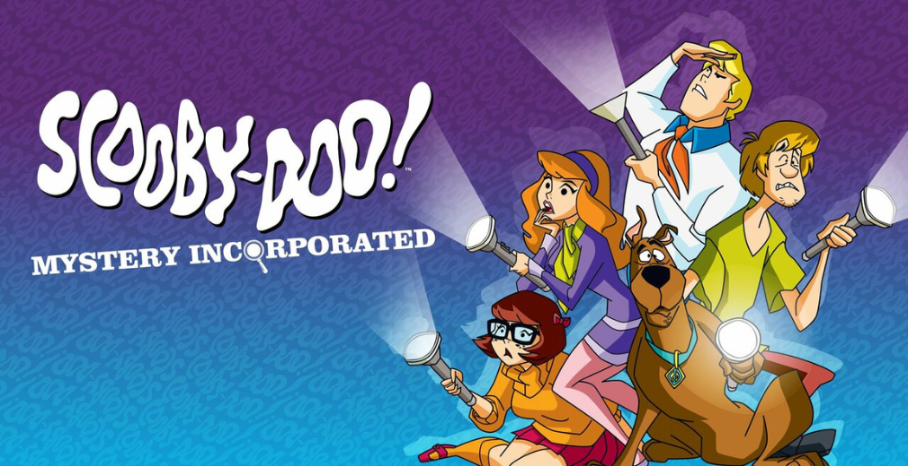
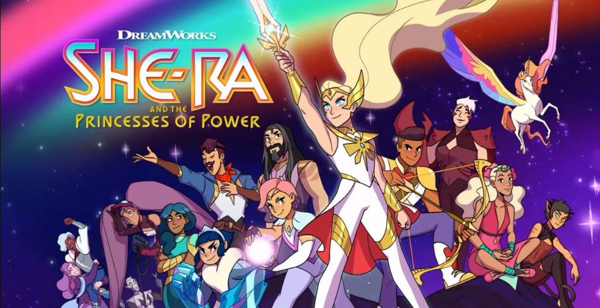
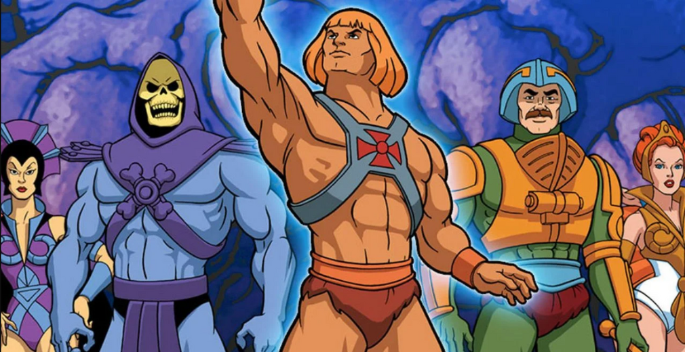
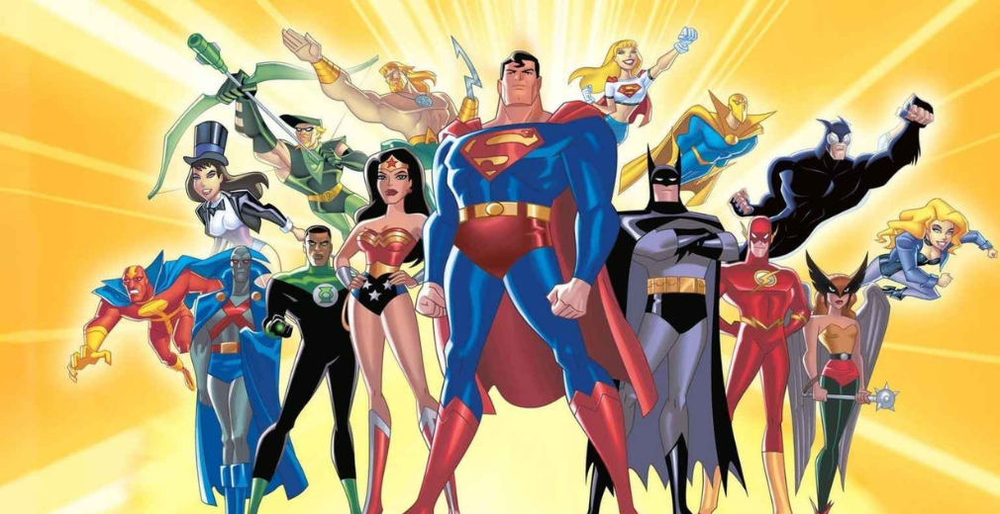
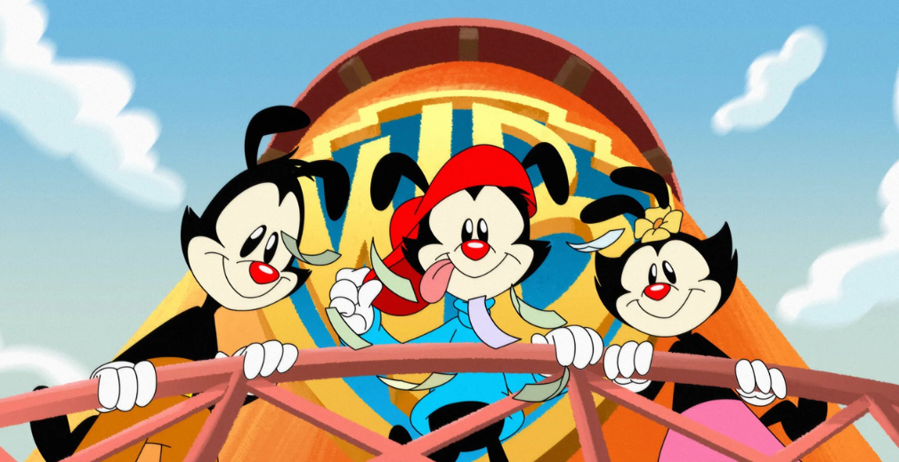

Scooby-Doo, Mistério S/A
O desenho “Scooby-Doo, Mistério S/A” (Scooby-Doo! Mystery Incorporated) é uma versão moderna da clássica série do Scooby-Doo. Lançado em 2010 pela Warner Bros. Animation, mostra a turma — Scooby-Doo, Salsicha, Fred, Daphne e Velma — morando na cidade de Crystal Cove, conhecida como “o lugar mais assombrado da Terra”. Enquanto resolvem mistérios de monstros falsos, eles descobrem uma conspiração antiga envolvendo um mistério real e uma antiga equipe de detetives desaparecida.
She-Ra e as Princesas do Poder
She-Ra e as Princesas do Poder (She-Ra and the Princesses of Power) é uma animação da DreamWorks lançada pela Netflix em 2018. A história segue Adora, uma jovem soldado da Horda que descobre uma espada mágica que a transforma em She-Ra, uma guerreira poderosa destinada a libertar o planeta Etheria do domínio do tirano Hordak. Ela se une a um grupo de princesas com poderes mágicos para formar uma aliança contra o mal.
She-Ra: A Princesa do Poder

é um desenho animado americano de 1985, criado como um spin-off de "He-Man e os Mestres do Universo" pela produtora Filmation. A trama acompanha a princesa Adora, irmã gêmea de He-Man, que é sequestrada ainda bebê e criada pela Horda Maligna, mas eventualmente descobre sua verdadeira identidade e se junta à Grande Rebelião para libertar o planeta Etéria.
He-man
O He-Man original foi um desenho animado chamado “He-Man and the Masters of the Universe”, lançado em 1983 pela Filmation para divulgar brinquedos da Mattel. A história se passa em Eternia, onde o Príncipe Adam usa a espada mágica e a frase “Pelos poderes de Grayskull... Eu tenho a força!” para se transformar em He-Man, o herói que protege o Castelo de Grayskull do vilão Esqueleto (Skeletor).
Liga da JUstiça Sem Limites
Liga da Justiça Sem Limites (Justice League Unlimited) é um desenho animado da DC Comics, lançado em 2004 como continuação de Liga da Justiça (2001). A série mostra a expansão da equipe, reunindo dezenas de heróis do universo DC — como Superman, Batman, Mulher-Maravilha, Lanterna Verde, Flash e muitos outros — para enfrentar ameaças cósmicas e inimigos poderosos.
Animaniacs
Animaniacs é um desenho animado de comédia criado pela Warner Bros. em 1993, produzido por Steven Spielberg. A série mostra as aventuras malucas dos irmãos Yakko, Wakko e Dot, que vivem causando confusão no estúdio da Warner Bros. junto com vários personagens secundários, como Pinky e Cérebro, dois ratos que tentam dominar o mundo.